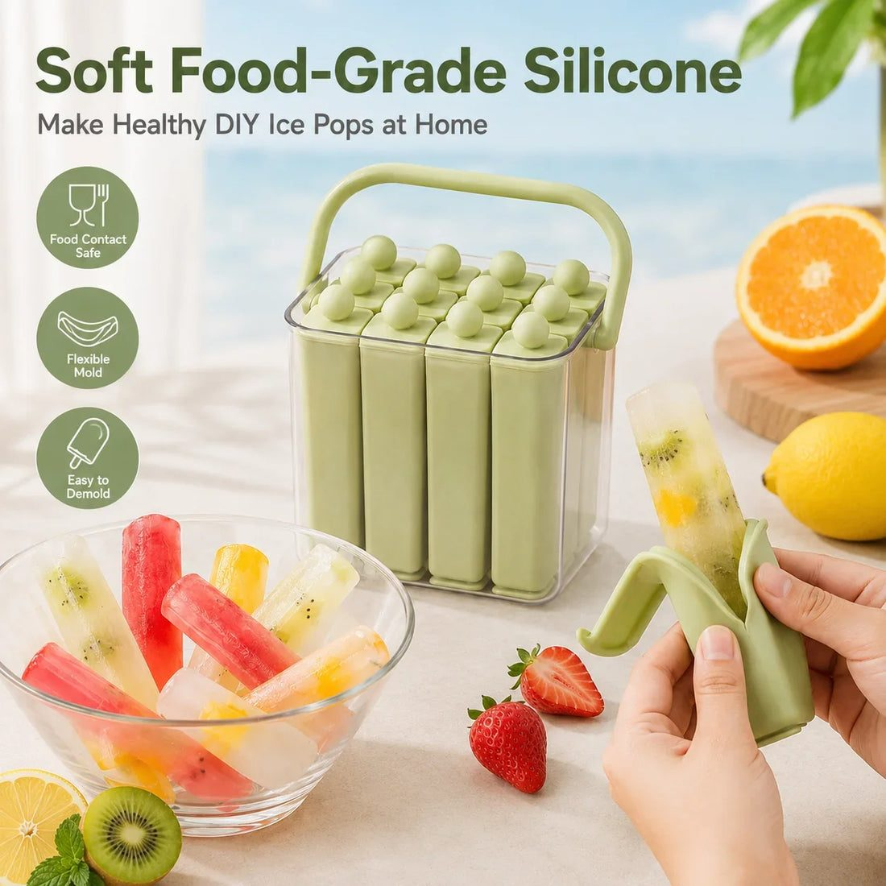
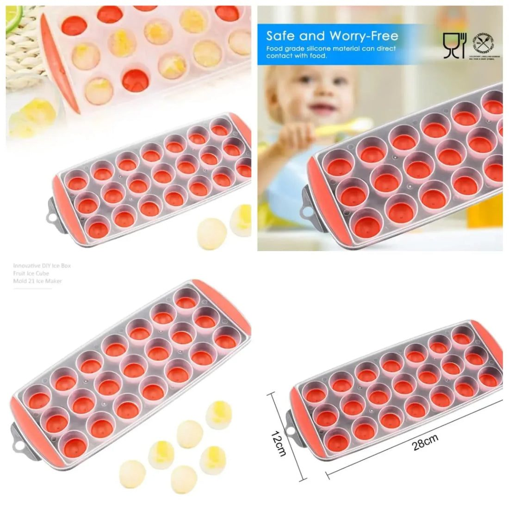
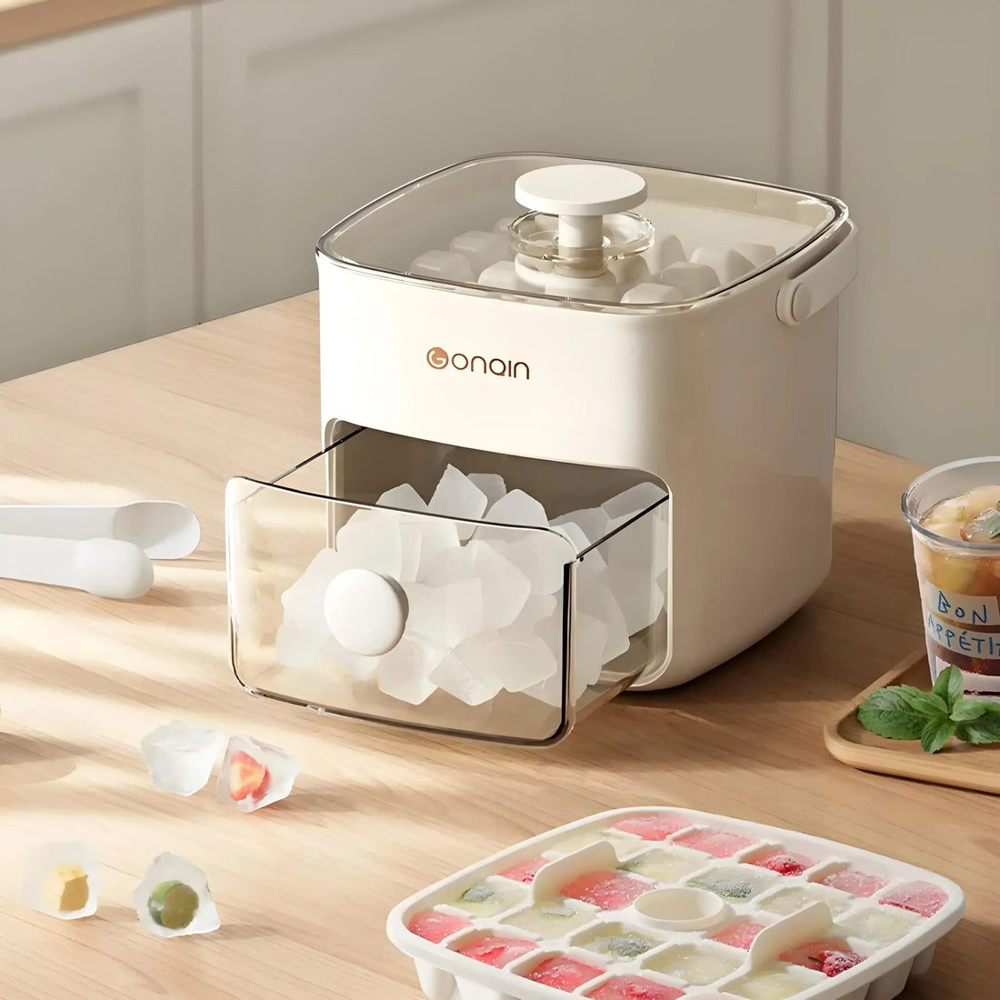

How to make and store ice at home in Pakistan's hot months: tray types, ice pop moulds, hygiene, and tips for load-shedding days.



From May to September, Karachi's humid heat, Lahore's dry blaze and Multan's scorching afternoons make ice a daily necessity. Pakistani households go through enormous amounts of it for nimbu pani, Rooh Afza, lassi and plain cold water. Many people still buy ice from the market in plastic bags, without knowing what water it was made from. Making clean ice at home is easy and much more hygienic, as long as you have the right trays and a few good habits.
Market ice is often made from untreated water and transported in unhygienic conditions. That ice goes straight into the drinks your family consumes. Ice made at home from filtered or boiled water is safer, especially for children and elderly people. It also tastes better, without the smell that sometimes comes with commercial ice.
Not all trays are the same:
For a family that uses ice daily, two or three lidded trays that stack neatly in the freezer work well.
Summer holidays mean children asking for ice lollies all day. Silicone ice pop moulds let you make them at home with mango pulp, watermelon juice, falsa sharbat, or yoghurt with fruit. You control the sugar and colour, and you know exactly what is in them. Children enjoy helping to pour and decorate. Freeze for at least six hours, then run the mould under tap water for a few seconds to loosen.
Always use filtered or boiled and cooled water for ice. Wash trays with warm soapy water regularly, as moulds and smells can develop in corners. Do not refill trays with old water left from the last batch. Keep ice away from raw meat in the freezer, ideally on a separate shelf, to avoid cross-contamination.
Ice does not have to be plain. Some easy ideas:
These cubes also look attractive when guests visit.
Power cuts can melt a freezer full of ice. Keep the freezer door closed as much as possible during outages. A full freezer stays cold longer than an empty one, so filling spare space with bottles of water helps. Stored ice in a closed container lasts longer than cubes left in open trays. If you have a cooler box, transfer ice to it during long outages.
Before a dawat or family gathering, make ice over two or three days and store the cubes in a large lidded container or freezer bag. Shake the bag occasionally so cubes do not fuse together. On the day, keep ice in an insulated bucket near the drinks table.
Very cold drinks after coming in from the sun can trigger a sore throat for some people. Let children cool down for a few minutes before giving them iced drinks. Sip slowly, and remember that ice does not replace water; staying hydrated is the real goal in a Pakistani summer.
A cluttered freezer makes ice smell of frozen fish and qeema. Give ice its own shelf or drawer, and keep trays covered. Stack lidded trays so they freeze evenly and you can see at a glance how much is ready. Label one tray for flavoured cubes so nobody gets lemon ice in their chai. Defrost the freezer regularly, since thick frost reduces space and makes the freezer work harder in the heat.
Before the next heatwave, stock up on lidded trays, pop-up trays and ice pop moulds from trenducts.pk, which delivers all over Pakistan. Clean ice at home is one of the simplest ways to keep your family cool and safe.